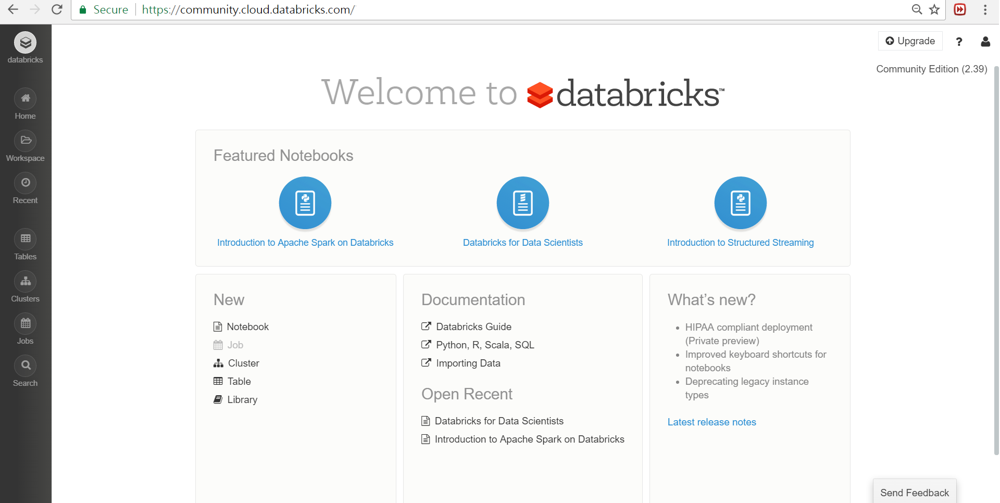
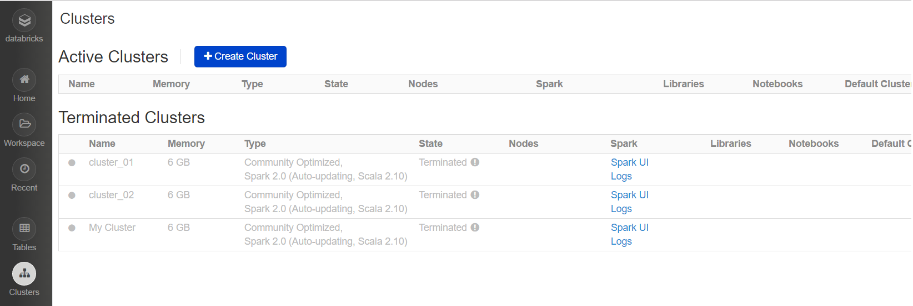
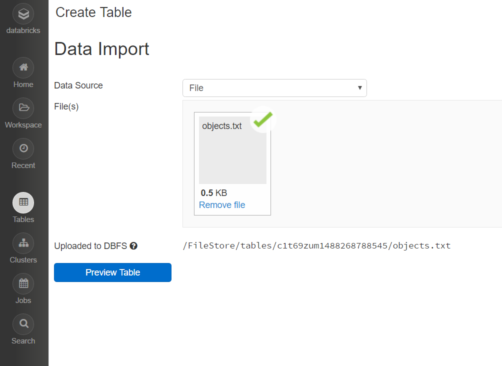
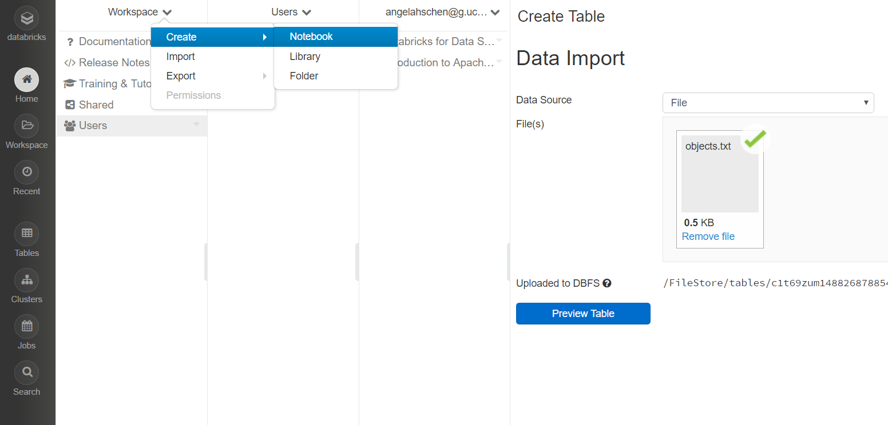
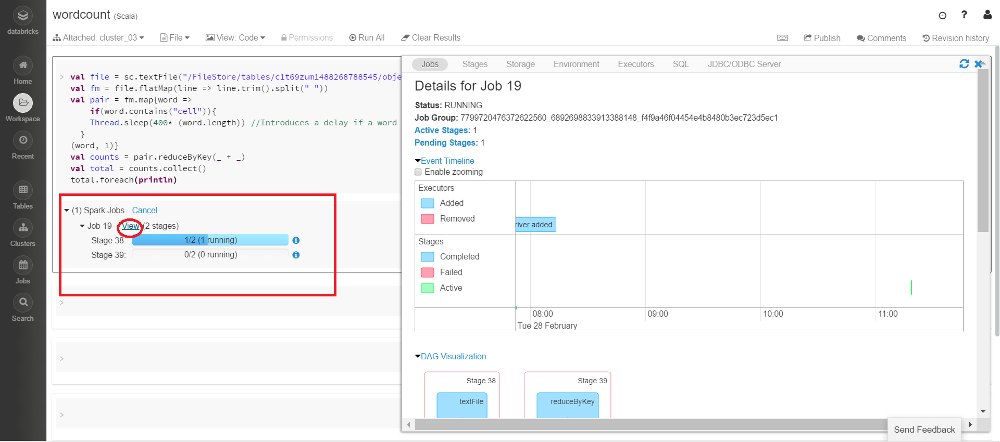
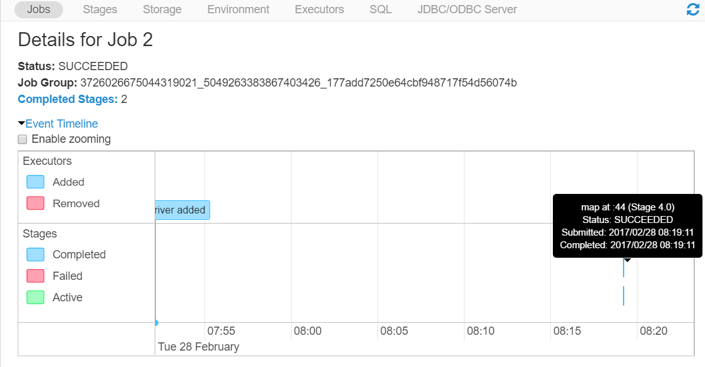
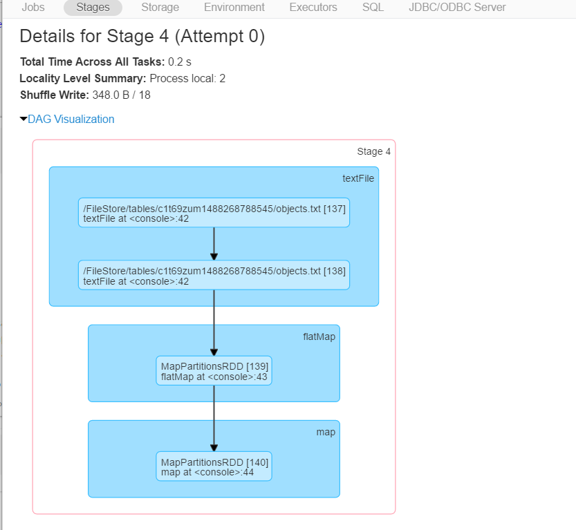
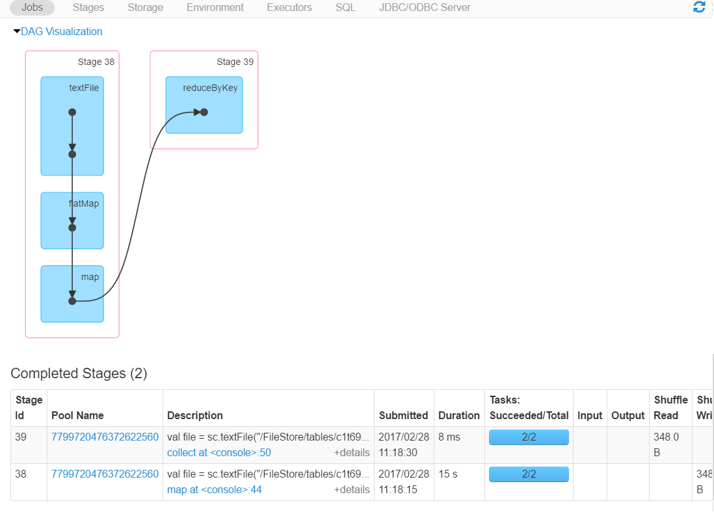
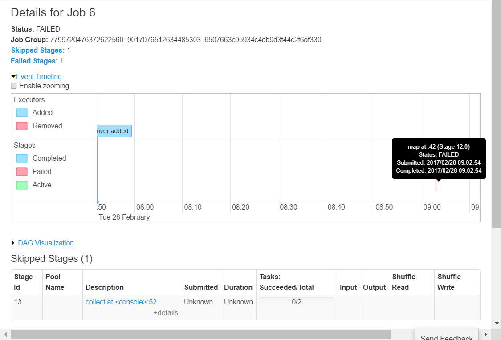
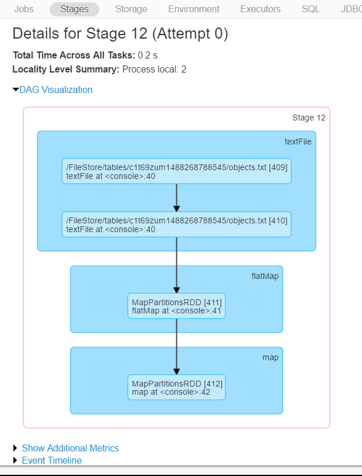

Angela Chen
Databricks is a managed platform for running Apache Spark, it provides UI for easier debugging on Spark. Databricks also provides a host of features to help its users be more productive with Spark. It's a point and click platform for those that prefer a user interface like data scientists or data analysts.
Databricks can be found here. Databricks provide a full-platform version and a community edition. We will be using the community edition in this demo.
1. Databricks Mainpage
After getting Databricks, we can see from Databricks' mainpage the features it offered. The most important ones are 'cluster', 'workspace', 'notebook', and 'tables'.

2. Cluster
Before we can run any codes, we need to set up a cluster. The cluster list page includes information about clusters that are currently running and those that have recently terminated. The Spark UI is available for both active and terminated clusters so that even if a cluster terminates, you can still debug the job that was running by viewing the Spark UI.

3. Load Tables
Tables are a simple way to make structured data available across your organization. To load table into Databricks, click the 'Table' option in the left sidebar. Tables support a variety of Apache Spark data sources. For example: Amazon S3 with Apache Spark, Databricks File System - DBFS, a user-uploaded file.
In our demo, we upload a file called 'objects.txt' for the wordcount example we will use later.
objects.txt
pencil lamp violin lamp violin violin
pen lamp violin lamp lamp glass xylophone
glass lamp violin laptop glass guitar violin
glass violin guitar glass laptop pen xylophone
violin lamp cellphone laptop glass laptop violin pencil guitar
violin xylophone pencil cellphone
glass violin laptop cellphone glass guitar
glass glass violin guitar pen laptop
lamp glass laptop violin cellphone
glass violin guitar pen xylophone pen
violin lamp cellphone laptop violin pencil guitar
violin lamp cellphone laptop glass lamp violin

Copy down the place where the table is stored. Here, it's "/FileStore/tables/c1t69zum1488268788545/objects.txt"
4. Run spark in notebook in workspace
The Workspace is the special root folder for all Databricks. The workspace stores all your notebooks, libraries, and dashboards.
Notebooks are one interface for interacting with Databricks. We first need to attach our notebook to a cluster, and after that, we're ready to run codes. Notebook contains a series of codes or commands, each command can be run independently of other commands. There are 3 types of notebook: python, java, sql. To execute the command, type the script below and press Shift+Enter to execute it.

5. Now we create a scala notebook called wordcount.scala
Code:
val file = sc.textFile("/FileStore/tables/c1t69zum1488268788545/objects.txt")
val fm = file.flatMap(line => line.trim().split(" "))
val pair = fm.map{word =>
if(word.contains("cell")){
Thread.sleep(400* (word.length))
}
(word, 1)}
val counts = pair.reduceByKey(_ + _)
val total = counts.collect()
total.foreach(println)
We use 'shift+enter' to run the code. After running it, we can view the progress bar,events timeline, and DAG




6. Debugging with Databricks
To see an example of debugging with Databricks, we create another notebook, wordcount_b.scala. This program is like the previous wordcount, but contains some data-dependent crashes. When a word in the file contains the string 'xy', it throws a null pointer exception
Code:
val file = sc.textFile("/FileStore/tables/c1t69zum1488268788545/objects.txt")
val fm = file.flatMap(line => line.trim().split(" "))
val pair = fm.map{word =>
if(word.contains("cell")){
Thread.sleep(400* (word.length))
}
if(word.contains("xy")){
val str = null
str.toString
}
(word, 1)}
val counts = pair.reduceByKey(_ + _)
val total = counts.collect()
total.foreach(println)


